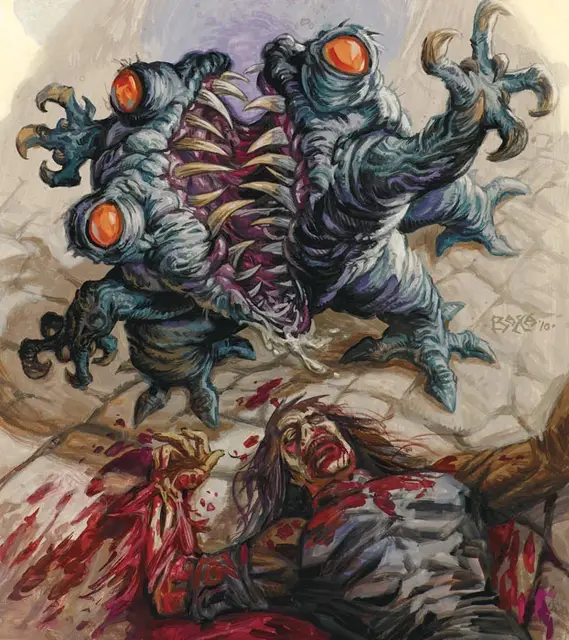

Утробный демон
Maw Demon
Среднее Исчадие (Демон), хаотично-злое

Класс Доспеха 13 (природный доспех)
Хиты 33 (6к8 + 6)
Скорость 30 футов
| мод | спас | ||
|---|---|---|---|
| СИЛ | 14 | +2 | +2 |
| ЛОВ | 8 | −1 | −1 |
| ТЕЛ | 13 | +1 | +1 |
| мод | спас | ||
|---|---|---|---|
| ИНТ | 5 | −3 | −3 |
| МДР | 8 | −1 | −1 |
| ХАР | 5 | −3 | −3 |
Сопротивление урону огонь, холод, электричество
Иммунитет к урону яд
Иммунитет к состояниям отравление, очарование, испуг
Чувства тёмное зрение 60 футов, пассивное Восприятие 9
Языки Бездны
Опасность 1 (200 опыта)
Бонус мастерства +2
Среда обитания Подземье
Особенности
Языки. Понимает язык Бездны но не может говорить.
Буйство. Снижая хиты существа до 0 рукопашной атакой в свой ход, утробный демон может использовать бонусное действие, чтобы переместиться на половину своей скорости и совершить атаку укусом.
Действия
Укус. . Рукопашная атака оружием: +4 к попаданию, досягаемость 5 футов, одна цель. Попадание: Колющий урон 11 (2к8 + 2).
Описание
Утробные демоны разделяют нескончаемую жажду Йеногу к убийству и плоти смертных. После того, как утробный демон отдохнет восемь часов, все, что он сожрал, переносится прямиком в желудок Лорда Дикости.
Утробные демоны встречаются среди боевых банд гноллов, обычно их вызывают как часть ритуальных подношений свежеубитых гуманоидов Йеногу. Гноллы ими не командуют, но утробные демоны следуют за стаей и атакуют всех, на кого нападают гноллы.
См. дополнительно статью: "Бестиарий: Демоны"